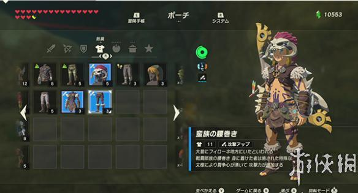
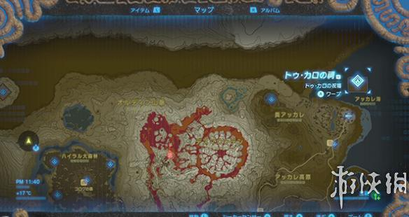
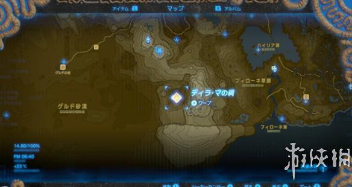

塞尔达传说荒野之息服装里面有一套叫蛮族套装，特殊效果是能够增加攻击力，对于好战的同学来说是个不错的选择。今天小编就为大家带来蛮族套装入手地点。感兴趣的朋友快来看看吧！
蛮族套装入手地点
这套衣服的三个部位需要分别解开游戏中的三个迷宫(真的是迷宫)，成功进入里面的祠就能够从宝箱中获得。

或者在アッカレ高原南边的イチカラ村买入(每件4000卢比)。
【蛮族之兜】

祠入口大约在这个位置(剑图标)。
【蛮族之服】
